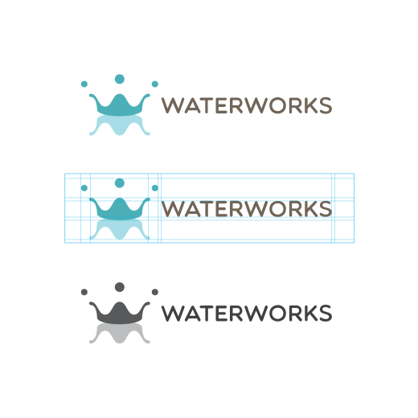

Waterworks branding
1 week • September 2014
The design works were done in Adobe Photoshop and Illustrator.

Logo
Waterworks logo design is based on a water droplet and its reflection. Both droplets and reflection of water represent 'W' shape of Water and Works.
Poster Design
The poster is designed to represent water cycle with four different water state, Rain, Snow, Water and Vapor, with the background of a point where Pittsburgh rivers meet.
- Font faces: Helvetica Neue LT Std, Futura Std
- Color scheme: #F69F7C #E9E7E0 #53C4CB